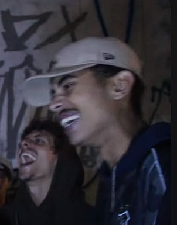

Início

Doprê, O mais agressivo de GR, começou novo nas batalhas.
Passou a ser reconhecido quando começou a participar da Batalha da Estudantes,
desde o começo ele demonstrava uma entrega fora do comum e se destacava
pelas suas punches que atropelavam quem estivesse pela frente.
Desenvolvimento

Seguindo com suas batalhas na Estudante, Doprê enfrentou seus irmãos tartarugas por
diversas vezes, o que o fez evoluir muito. Protagonizando batalhas incríveis contra Barreto,
eles foram crescendo e evoluindo cada vez mais.
Aprimorando todos os seus atributos de freestyle, Doprê evoluiu em Construção, métrica e flow,
o que contribuiu para que ele entregasse punches cada vez mais cirúrgicas em quem o enfrentava.
A besta fora da jaula

Com o hype dos vídeos curtos, Doprê passou a ser mais conhecido nos anos de 2022 e 2023,
o que rapidamente trouxe para ele notoriedade, já que ele é um MC diferente.
Com a evidência trazida pelos vídeos, Doprê rapidamente ficou conhecido como o mais agressivo da cena
e isso o motivou para que ele verdadeiramente fosse uma besta fora da jaula,
que distribui fatalitys por onde ele passa, deixando os
oponentes sem reação e resposta.
Futuro

Ao que tudo indica Doprê pretende estabelecer carreira musical,
mas também não deu indícios de que pararia de batalhar, o que é motivo de alegria pro públido do freestyle.
Sendo reconhecido por ser pouca mídia e muita rima, ver nosso
Rafa ganhando o espaço que merece na cena das batalhas seria incrível.